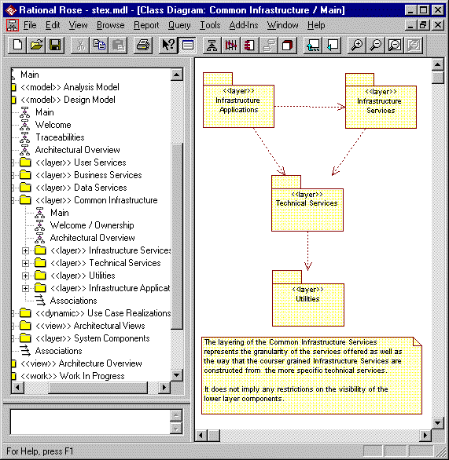
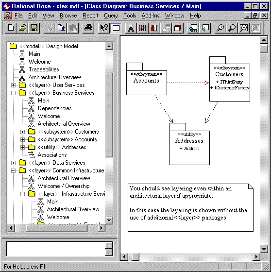

Standards: <<layer>>
TopicsNaming Standard
|
| Diagram | Purpose | Use | Comment |
| Main *1 | A class diagram showing the layering / partitioning of the layer and the dependencies between the packages within the layer. | Mandatory | This diagram can often be combined with the Welcome diagram to both introduce the layer and detail its organization in a combined diagram called Main / Welcome. |
| Dependencies | A class diagram showing which other layers the layer depends on. | Mandatory* | *This diagram is only required if the layer depends on other layers in the model. |
| Architectural Overview | A class diagram describing the architectural rules for partitioning the layer. | Mandatory | Where the main diagram details the entire contents of the layer, the Architectural Overview diagram focuses on the architectural rules for partitioning the layer and will often only include a subset of the layers contents. |
| Welcome | A diagram presenting the purpose of the layer. | Optional | An explanatory diagram welcoming users to the layer. |
Notes:
*1 - The Main diagram is sometimes referred to as the Organization or Package/Subsystems Dependencies diagram (See the RUP: Rose Tool Mentors).
Constraints 
Constraints: <<layer>> packages can only contain other packages.
Notes: layers should only be dependent on other layers. If a model chooses to use layers then the entire static model should be contained within those layers.
Examples
Two example layers are shown with their Main diagrams displayed:
The first example illustrates a layered layer, where the contents of the layer itself is more layers.

The second layer shown is not layered but still only contains other packages (in this case <<subsystem>> and <<utility>> packages).
